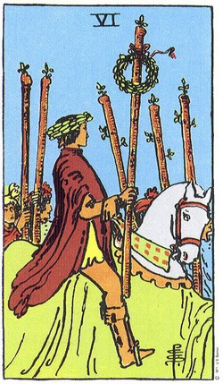

Preparar las cartas no tiene que ser complejo. En esta etapa del proyecto, el objetivo es mostrar una práctica simulada y comprensible: ordenar el espacio, cuidar la intención y recordar que el Tarot funciona como herramienta de reflexión personal.
1. Ordena el espacio de lectura
Un lugar despejado ayuda a reducir distracciones. Puede bastar con una mesa limpia, una libreta y el mazo listo para mezclar.
2. Define la intención
Antes de sacar cartas, escribe una frase breve que explique qué quieres mirar. Esto evita que la lectura se vuelva confusa o demasiado amplia.
3. Cierra la práctica
Después de revisar las cartas, guarda el mazo y anota una acción concreta. Ese cierre transforma la lectura en una reflexión aplicable.